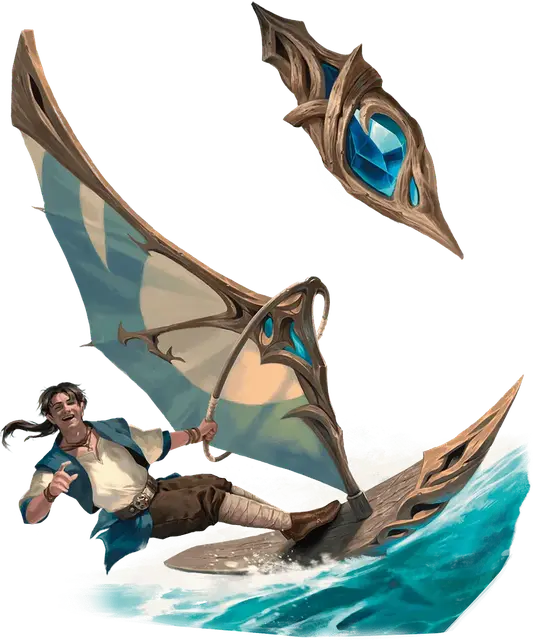

Ветряной челнок
Windskiff
Чудесный предмет, редкий

Рекомендованная стоимость 4000 ЗМ
Это небольшое ювелирное изделие имеет 3 заряда и восстанавливает все потраченные заряды на каждом рассвете. Пока вы держите его, можете действием Магия потратить 1 заряд, превращая ювелирное изделие в личный парусный транспорт. Этот транспорт размерами и формой походит на дверь обычного дома, с одной стороны которой находится парус высотой 10 футов. Через час, или раньше, если вы скажете нужное командное слово (действий не требуется), превращение заканчивается, и транспорт снова становится ювелирным изделием.
В форме транспорта челнок — это Средний объект с параметрами: 12 КЗ, 30 Хитов, Скорость 40 фт. Челнок парит на высоте пары дюймов (~5см) над поверхностью, на которой находится, а также может планировать: он перемещается на 5 футов по горизонтали за каждый 1 фут, который он опускается в воздухе. Ни челнок, ни пассажиры не получают урона от падения.